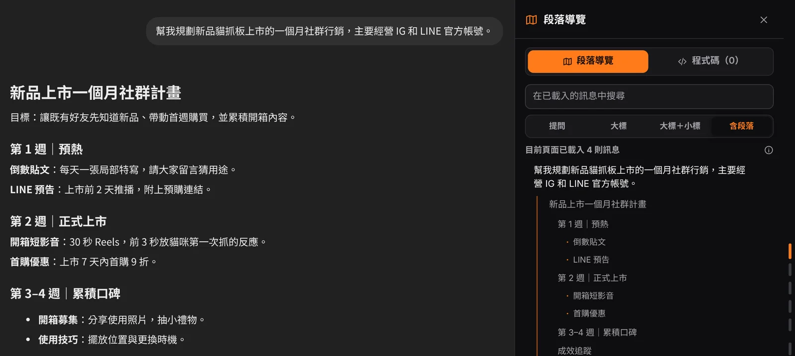
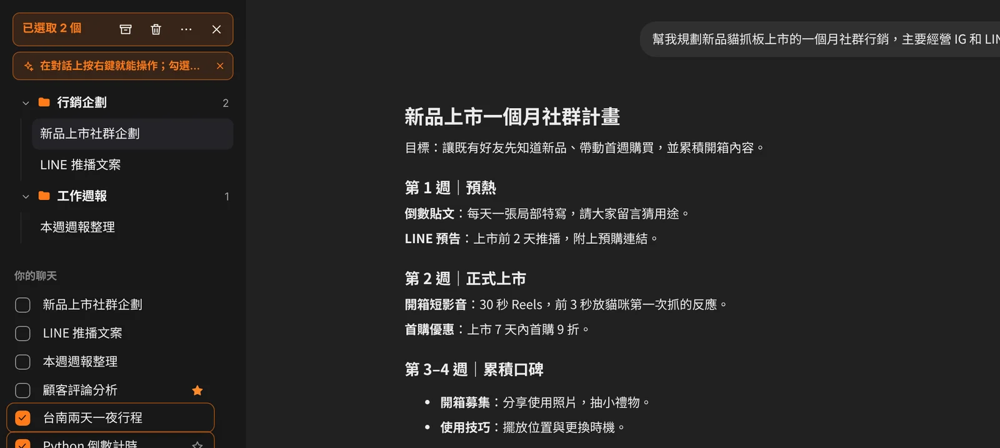
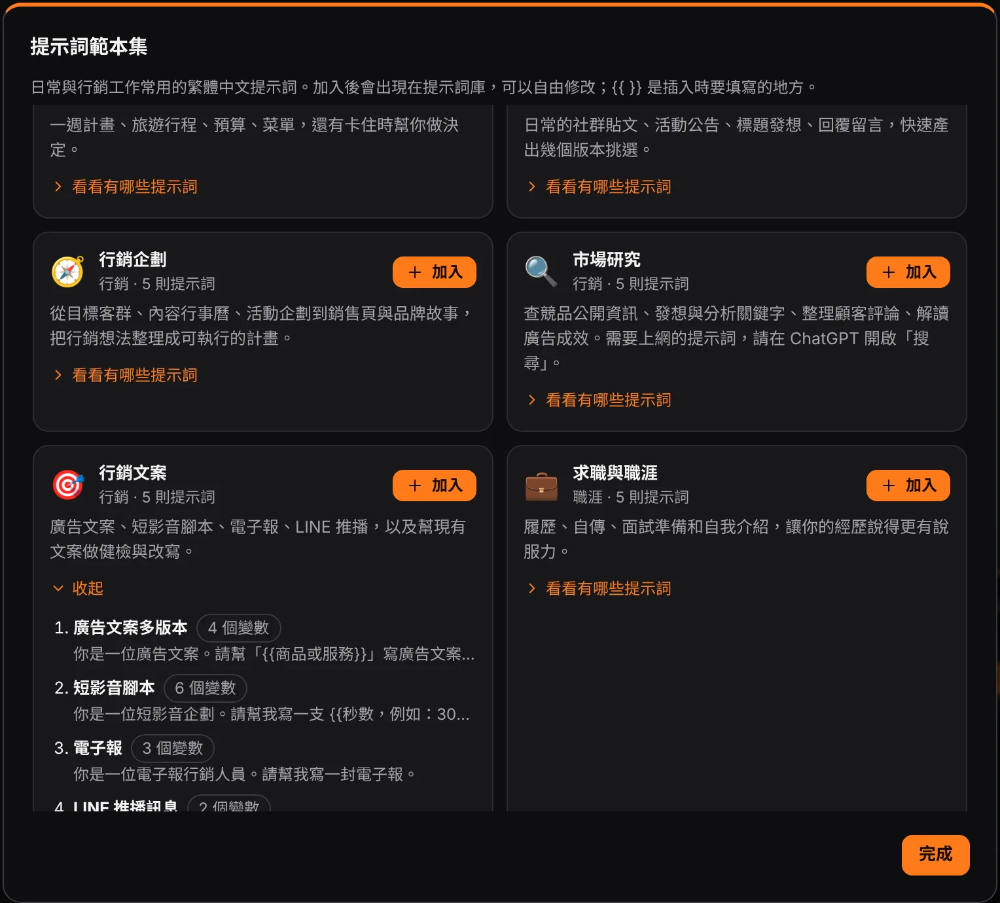
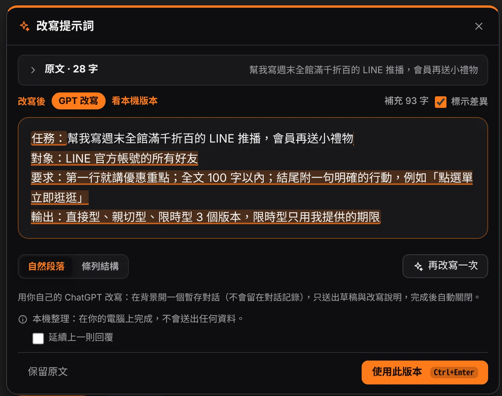
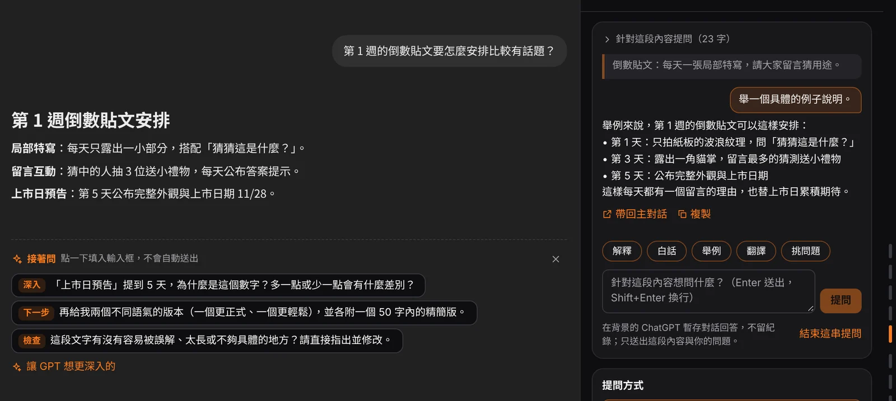

對話越聊越多
找不到上週那一則？
像管理檔案一樣整理
在 ChatGPT 側欄直接建立資料夾，把對話拖進去歸類；常用的加上星標，一鍵只看星標。
- 拖曳就能歸類到資料夾
- 同步完整清單後，連側欄還沒載入的舊對話也搜尋得到
- 可勾選多則一起移動、封存或刪除，每次都會先確認
「組盒」是一層套一層、大小剛好的收納盒。Kumihako 把對話收進資料夾、把長回覆整理成目錄、把常用提示詞做成範本，需要的時候一打開就找得到。

不用換工具、不用學新介面。Kumihako 直接加在 ChatGPT 網頁上，跟著淺色／深色主題切換。
在 ChatGPT 側欄直接建立資料夾，把對話拖進去歸類；常用的加上星標，一鍵只看星標。

段落導覽自動列出每個提問，以及回覆裡的標題和粗體重點，點一下就跳到那裡。
依情境分成 12 組原創範本，在輸入框打 // 就能叫出來；{{ }} 填空欄位，插入時才填產品名稱、對象或字數。

把隨手寫的需求整理成有任務、對象、要求、輸出格式的完整提示詞，並標出新增與刪除的地方，確認後才放進輸入框。

選取回覆中的任一段另外發問，答案顯示在右側面板；回覆完成後，依你剛才的提問與內容建議下一步該問什麼。

整理工具會碰到你的對話，所以我們把「少拿、少傳、先確認」當成設計原則。
不讀取瀏覽紀錄，也不要求存取其他網站，只在 chatgpt.com 上運作。
資料夾、書籤、筆記、提示詞與設定都存在本機。不需要註冊，沒有我們的伺服器。
沒有分析程式，不記錄你的使用行為，對話內容不會被上傳給開發者。
GPT 改寫、接著問與旁支提問，用你自己的 ChatGPT 在背景開暫時對話完成，不會留在對話紀錄。
刪除、封存一定再次確認；只在你按下按鈕時執行，不會自動處理任何對話。
介面、說明與範本都以繁體中文撰寫，用語貼近台灣的工作與生活，不是翻譯過來的。
完整說明請見 隱私權政策。
不需要註冊 Kumihako 帳號。使用時只需要登入你原本的 ChatGPT。
不會傳給開發者或任何第三方。只有在你使用 GPT 改寫、接著問或旁支提問時，會把這次需要的文字送到你自己的 ChatGPT 暫時對話處理。
對話長度圓圈變黃或變紅時，按「開新對話接著做」：Kumihako 會請你的 ChatGPT 把目前對話整理成交接重點（目標、結論、重要細節、下一步），再開一個新對話放進輸入框，你確認後再送出。
在「設定」匯出備份檔，到新電腦上匯入即可還原。
刪除與封存每次都會跳出確認，只會處理你勾選的對話。
目前只支援 ChatGPT 網頁版（chatgpt.com），建議使用 Chrome 120 以上版本。
不是。Kumihako 組盒是獨立開發的擴充功能，與 OpenAI 沒有合作或隸屬關係。ChatGPT 是 OpenAI 的商標。